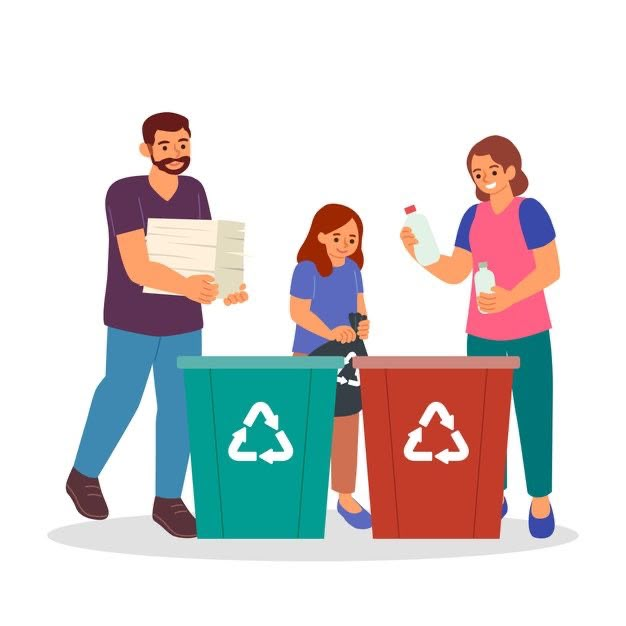
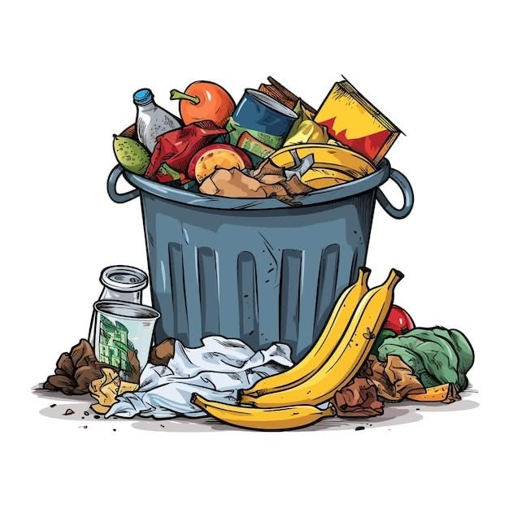
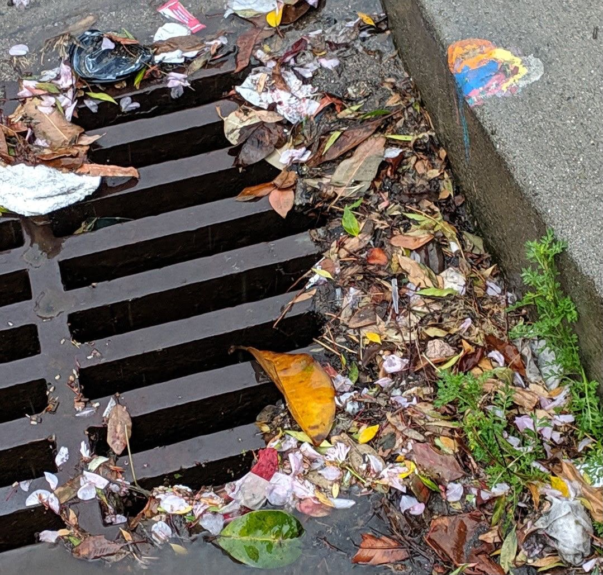
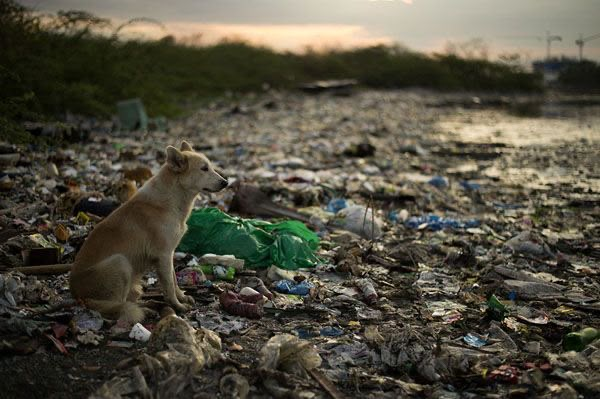
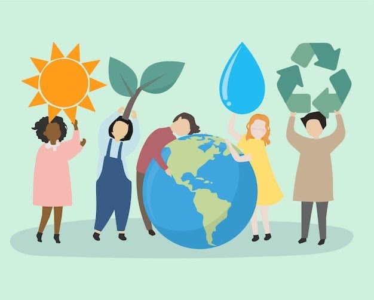
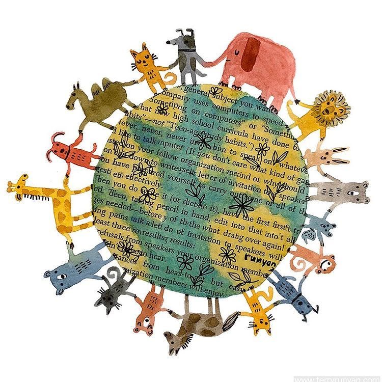

En nuestra comunidad se generan distintos tipos de residuos cada día, provenientes principalmente de hogares, tiendas locales, zonas de recreación y espacios de tránsito diario. El residuo más abundante es el plástico, que aparece en bolsas para compras, botellas de agua, envases de alimentos, empaques de dulces, tapas y recipientes desechables. Muchas veces estos plásticos se usan solamente unos minutos y después se desechan, generando una gran cantidad de desechos en poco tiempo. También se produce mucho papel y cartón, como hojas impresas, cajas de productos, periódicos, folletos y empaques de mercancía que llegan a las viviendas y comercios. Otro residuo frecuente es el vidrio, presente en frascos y botellas, además de latas de aluminio y metales pequeños. Los residuos orgánicos también representan una parte muy importante, formados por cáscaras de frutas, restos de verduras, sobras de comida y hojas secas de plantas. Existen además residuos sanitarios y desechos contaminados que no deben mezclarse con materiales reciclables, ya que arruinan todo el proceso de separación correcta.


La mayor acumulación de basura en la comunidad se presenta en múltiples puntos, siendo las esquinas de las calles uno de los lugares más afectados. Cerca de los contenedores de recolección también se amontonan muchos desechos cuando las personas no logran meter toda la basura dentro, o dejan bolsas afuera esperando el paso del camión recolector. Los drenajes abiertos, alcantarillas y canales pequeños son otro sitio donde se acumula muchísima basura, ya que el viento y el arrastre del agua llevan ahí plásticos, papeles y otros residuos. Los parques públicos, callejones sin vigilancia, terrenos baldíos y orillas de caminos también se llenan rápidamente de desechos. Muchos vecinos usan estos espacios como sitios para tirar la basura porque creen que nadie lo va a notar, sin pensar en las consecuencias. Las zonas cercanas a tiendas pequeñas, puestos ambulantes y paradas de transporte público también presentan mucha acumulación, debido al alto flujo de personas que consumen productos empaquetados y desechan los envases en el momento. Cuando llega la época de lluvias, toda esa basura se desplaza, tapando aún más los drenajes y llevando la contaminación hacia ríos y suelos alejados. La recolección tardía o la falta de paso constante del camión recolector empeora la situación, permitiendo que la basura se extienda por varios días y atraiga más desechos que las personas depositan en el mismo lugar.


El principal problema que tenemos en la comunidad es la mezcla de todos los residuos, ya que al juntar plástico, papel, cartón y restos de comida se contamina el material reciclable y ya no se puede transformar en nuevos productos. Esto hace que incluso los materiales que podían ser aprovechados terminen en el vertedero, desperdiciando recursos naturales y aumentando la cantidad de basura que debe ser transportada y enterrada. Otro gran problema es la falta de conciencia ambiental, pues muchas personas no saben separar correctamente los residuos o creen que su acción individual no cambia nada, por lo que continúan tirando la basura en cualquier sitio. La acumulación constante genera malos olores muy fuertes, que afectan directamente la calidad de vida de las familias que viven cerca de estos puntos de acumulación. Además, atrae moscas, insectos, cucarachas y roedores como ratas, que son transmisores de muchas enfermedades, especialmente infecciones gastrointestinales y alergias. Cuando la basura tapa los drenajes, en época de lluvia se producen inundaciones en calles y viviendas, generando daños materiales y facilitando la propagación de enfermedades por agua contaminada. También se produce contaminación del suelo y del agua subterránea, ya que los líquidos que salen de la basura se filtran hacia la tierra, afectando plantas y el agua que usan los habitantes. A esto se suma la escasez de contenedores etiquetados para separar residuos, la falta de campañas de educación ambiental y la poca frecuencia de recolección municipal, creando un ciclo donde la basura se acumula cada vez más. Incluso la imagen de la comunidad se ve afectada, reduciendo la belleza de los espacios públicos y disminuyendo la voluntad de las personas por cuidar el entorno.

